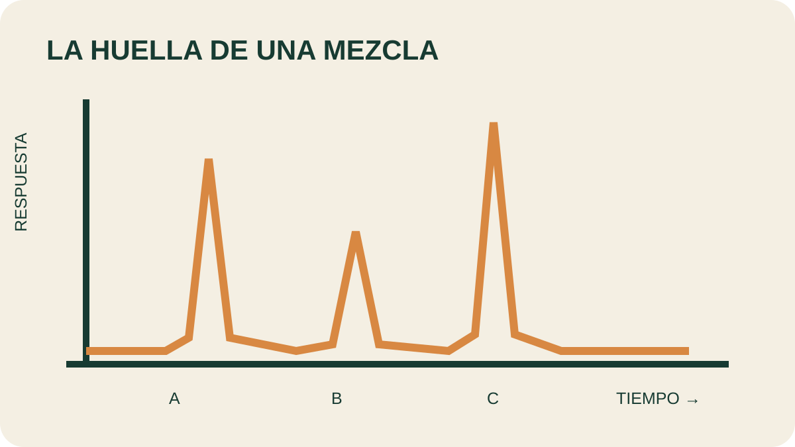

Módulo 21 · 25 minutos
Cromatografía: la huella digital de un aceite
Al terminar, vas a poder explicar qué información aporta una cromatografía y realizar una separación sencilla en papel.
Un color que no era uno
Una línea de marcador parece uniforme. Cuando el alcohol asciende por el papel, el color se abre en varias bandas. Lo que parecía una sola sustancia era una mezcla. La cromatografía de laboratorio trabaja con instrumentos más precisos, pero conserva la misma pregunta: ¿qué componentes viajan y cuánto tarda cada uno?
Separar para identificar
La cromatografía permite separar mezclas orgánicas complejas y determinar sus componentes cualitativa y cuantitativamente. La muestra se distribuye entre una fase que se mueve y otra que permanece.
En cromatografía de gases, la muestra se volatiliza e ingresa a una columna. La es un gas inerte cuya función es conducir el analito. La retiene cada componente con distinta intensidad.
En el sistema gas-sólido, la retención se produce por adsorción sobre un sólido. En gas-líquido, el más usado, una película líquida se encuentra inmovilizada sobre un soporte inerte.
Del inyector al detector
El gas portador transporta la muestra. La inyección debe ser rápida y de cantidad adecuada para que entre como un tapón de vapor y no ensanche las bandas. Después llega a una columna alojada normalmente en un horno.
Las columnas pueden estar empaquetadas o ser tubulares abiertas, también llamadas capilares. Miden entre 2 y 60 metros y pueden construirse en acero inoxidable, vidrio, sílice fundida o teflón. La temperatura modifica el grado de separación.
Al final, el detector registra cuándo sale cada analito. Se busca sensibilidad, respuesta lineal, rapidez, estabilidad, reproducibilidad, fiabilidad y una respuesta selectiva y predecible.

Leé la salida
Seguí el recorrido desde la inyección hasta el detector. Después compará posición y altura de los picos. ¿Qué te permite afirmar que la muestra contiene más de un componente?
Una placa y una regla de polaridad
La cromatografía en capa fina utiliza una capa uniforme de absorbente sobre vidrio, aluminio u otro soporte. La fase móvil es líquida y la estacionaria, sólida. Si la fase estacionaria es polar y el eluyente menos polar, los componentes menos polares se desplazan con mayor velocidad.
El se elige de manera empírica considerando polaridad, precio, pureza, volatilidad y reproducibilidad. El material aconseja evitar mezclas de eluyentes y trazas metálicas capaces de actuar como catalizadores.
La experiencia de papel
Se necesitan tiras de papel de filtro, marcadores, un vaso y alcohol. La tira debe superar la altura del vaso y quedar suspendida desde un lápiz o varilla. Se coloca alcohol hasta aproximadamente un dedo de altura y una marca de tinta cerca del extremo inferior, por encima del nivel del líquido.
Solo la base toca el alcohol. El vaso se tapa para reducir la evaporación. Al ascender, el alcohol arrastra los pigmentos a velocidades distintas. La transforma una mancha en un patrón separable.
Actividad · Una cromatografía en papel
Realizá el montaje con dos colores. Marcá la línea inicial y la altura final del alcohol. Registrá cuántas bandas aparecen, cuál llega más lejos y qué color parecía más complejo. Explicá el resultado usando polaridad, fase móvil y fase estacionaria.
La huella existe, pero puede cambiar
Reconocer el perfil es solo una parte del control. Luz, humedad, aire, un envase inadecuado o una etiqueta ausente pueden degradar el aceite antes de que llegue a usarse.
Guardá esta estación
Cuando puedas explicar la idea central con tus propias palabras, marcá el módulo como completado.